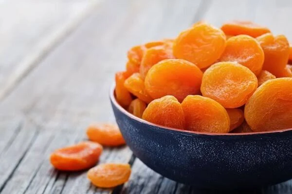
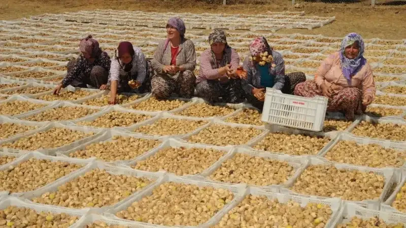

En çok satan
Kuru İncir
Tahta tepsilerde güneşte kurutulan, elde altı kaliteye ayrılan doğal Lerida ve Protoben incirleri.
Teknik bilgileri görün →2026 sezon hasatları başlamıştır. Kurutma işlemi yapılıp alıcılara ulaştırılacaktır. Aegean Sun inciri ve kayısıyı kaynağında seçer, kurutur ve paketler — açtığınız her koli, üreticinin amaçladığı tadı taşır. Perakende paketler, toplu tüketim ve özel markalı üretim; 24 ülkeye gönderiliyor. Küresel pazarlar için özel toptan tedarik. Sertifikalı kalite, doğal tatlılık ve köklü bir miras.

Sattığımız her şey, adını adım adım bildiğimiz iki üretim bölgesinden geliyor: Aydın'ın incir bahçeleri ve Malatya'nın kayısı terasları.
Tahta tepsilerde güneşte kurutulan, elde altı kaliteye ayrılan doğal Lerida ve Protoben incirleri.
Teknik bilgileri görün →
Preslenmiş incir hamuru baharat ve kuruyemişle harmanlanıp dinlendirilir. Altı çeşit, hepsi 180 g; şeker ilavesiz, katkısız.
Teknik bilgileri görün →
Jumbodan sanayi kalibresine kadar, kükürtlü sarı ve doğal koyu tipleriyle Malatya kayısısı.
Teknik bilgileri görün →
Dalında olgunlaşır, yalnızca güneş ve rüzgârla kurutulur; hiçbir işlem görmez. İstediğiniz gramajda paketlenir.
Teknik bilgileri görün →
İhracatçıların çoğu borsadan mal alır. Biz her yıl aynı 140 üretici aileyle sözleşme yapar, hasattan önce bahçeleri gezer ve meyveyi bahçelere 20 dakika uzaklıktaki kendi tesisimizde kurutuyoruz.
Meyve ağacında olgunlaşıp kendiliğinden düşer; ağustos ve eylül boyunca her gün toplanır.
Açık tepsilerde beş ila yedi gün, elle çevrilerek. Ardından kontrollü kurutucularda nem dengelenir.
Metal dedektörü, optik ayıklama, elde boylama ve laboratuvar testi tamamlanmadan parti serbest bırakılmaz.
Sizin formatınız, sizin etiketiniz. Paletlenip yüklenir; genellikle siparişten sonraki 10 iş günü içinde.
Bu dört adımı filmde izleyin.
Ne aldığınızı görerek alın.
Doğal ürünlerimizde ilave şeker, glikoz şurubu ve koruyucu yoktur. Tarif basit: meyve ve güneş.
BRCGS, ISO 22000 ve organik sertifikasyon; her sevkiyatta eksiksiz belge desteğiyle.
İzmir'den FCL, LCL ve hava kargo. Talebe göre EXW, FOB, CIF ve DDP teslim şekilleri.
“Üç sezon önce tedarikçimizi değiştirdik, o günden beri tek bir parti bile reddetmedik. Boylama tam olarak spesifikasyonda yazdığı gibi.”Satın alma müdürü, organik perakende zinciri — Almanya
“İncir salamı her kış tükeniyor. Hediyelik ürün grubumuzda müşterilerin adıyla sorduğu tek ürün.”Kurucu, gurme gıda ithalatçısı — Birleşik Krallık
Kuru meyve, bir market ürünü olmadan önce bir tarım ürünüdür. Tadını, sonrasında yaptığımız her şeyden çok hangi ovada yetiştiği belirler.
Nazilli ve İncirliova çevresindeki bu şerit, Sarılop incirinin dünyada kuru incirin ölçüsü hâline geldiği yerdir. Sıcak ve kurak yazlar, serin geceler ve kireçli toprak, meyvenin dalında olgunlaşıp şekerini kendiliğinden yoğunlaştırmasını sağlar.
İncirlerimizin tamamı, Aydın fabrikamıza bir saat mesafedeki sözleşmeli bahçelerden gelir; bütün kaliteler burada kurutulup paketlenir. İncir salamının inciri ise buradan Atina'daki üretim fabrikamıza gider; preslenip dinlendirilmesi orada olur.
Dünyada tüketilen kuru kayısının yaklaşık beşte dördü, Fırat'ın yukarısındaki Malatya teraslarından gelir. Rakım ve kısa ama yoğun bir sezon, Hacıhaliloğlu kayısısına yoğunluğunu ve dayanıklılığını verir.
Buradan doğrudan alım yapıyor, her pazarın izin verdiği kükürt seviyesine göre kurutuyor; hem sarı hem doğal tipleri gönderiyoruz.
Ürünü, miktarı ve varış noktasını iletin; size fiyat, termin ve numune ile dönelim.
Satış ofisi: İstanbul / Kağıthane
Fabrika: Aydın / Nazilli
Üretim fabrikası: Atina / Yunanistan
Bahçe ve tesis ziyaretlerine açığız.
Dört ürünün tamamından ücretli numune kutusu isteyin.